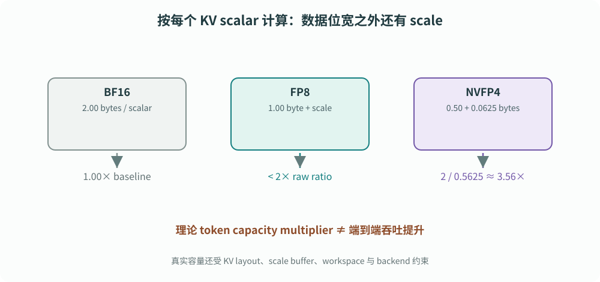
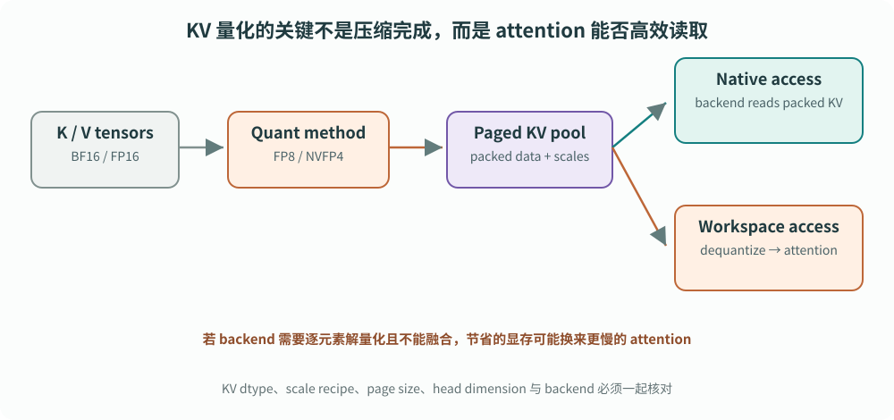

第 22 章 · SGLang 生产推理机制
Quantized KV Cache：FP8、FP4、Scale 与 Attention Backend
KV Cache 从 BF16 压缩到 FP8/FP4 后，scale metadata、page layout、attention backend 和精度验证如何共同决定真实收益。
KV Cache 从 BF16 压缩到 FP8/FP4 后，scale metadata、page layout、attention backend 和精度验证如何共同决定真实收益。 本章将论文中的算法背景、SGLang 当前实现、可复现的教学抽象与硬件限制分开说明。实现断言固定到 2026-11-23 的上游快照，不能把兼容表当成永久承诺。
读完本章，你应该能
- 画出从输入数据到运行时执行路径的关键对象。
- 解释数学近似、内存布局和 kernel/backend 之间的约束。
- 用 CPU-only toy 实验检查边界，而不把教学代码误称为 GPU 实现。
1. 为什么 KV cache 会成为显存瓶颈
权重大小基本随模型固定，而 KV cache 随请求数、上下文长度和生成长度增长。对标准 MHA/GQA 的粗略估算，KV 元素数与 (2\times L\times H_{kv}\times D\times T) 成正比；其中 2 表示 Key 与 Value，(L) 是层数，(H_{kv}) 是 KV heads，(D) 是 head dimension，(T) 是 token 数。因此 KV cache 量化的直接目标是：同一显存预算里容纳更多 KV tokens，进而支持更长上下文或更高并发。它并不直接压缩模型权重。
2. FP8 与 FP4：格式位数不等于完整存储成本

FP8 E4M3 有更多 mantissa bits，精度相对高、动态范围较小；E5M2 有更大的 exponent range，但 mantissa 精度较低。FP4 E2M1 则更激进，SGLang 文档将 FP4 KV cache 标为 experimental，并区分 `nvfp4` 与 `fp4_mx_block16` 两种 recipe。后者不是 OCP 标准 block-size-32 MXFP4 的简单别名。
3. Scale：量化数据旁边还要保存什么
FP8 KV cache 需要 K/V scaling factors。当前文档说明支持 per-tensor scalar scale；scale 可以从 checkpoint 的 `k_scale` / `v_scale` 加载，也可以由 `--quantization-param-path` 提供。若 checkpoint 和 JSON 都没有 scale，当前路径会回退到 1.0，这可能带来精度问题。因此 scale 不是“可有可无的辅助参数”。它定义量化值如何映射回真实数值范围，也会影响加载契约、pool layout 和 kernel 读取方式。
4. 写入与读取：KV pool 和 Attention backend 是两个责任方

写入时，K/V tensor 根据 recipe 和 scale 被量化后存入 paged KV pool。读取时，attention backend 必须知道自己要消费什么 layout：有的路径可以直接读取 native packed FP4，有的路径要先把数据解压到临时 workspace。SGLang 的 FP4 strategy 代码把 quant method、pool 与 backend 访问规则分开；backend 按 prefill/decode phase 解析访问方式，不支持的组合应尽早失败。
这也是本章最重要的工程结论：**量化 cache 只有在 attention 读取路径也支持它时才有意义**。如果 dequantization 没有融合进 attention kernel，额外的读写和转换可能抵消显存收益。
5. 有效容量估算：把 scale overhead 算进去
对文档中的 native NVFP4 recipe，每个 scalar 的 packed data 成本为 0.5 byte；每 16 个 scalar 共用一个 1-byte block scale，因此摊到每个 scalar 是 1/16 byte。BF16 每个 scalar 为 2 bytes。这是文档给出的理论 token-capacity multiplier，不是端到端吞吐倍率。混合 prefill recipe 可能还有 FP8 workspace 与第二套 scale layout；SGLang 的 pool sizing 需要把这些辅助 buffer 算入。
运行 kv_cache_quantization.py，比较 BF16、FP8、NVFP4 的教学存储成本与 block quantization 误差。该脚本不实现真实 E2M1 bit packing 或 TRT-LLM attention。
6. SM100 native NVFP4：兼容条件比 dtype 更具体
当前文档对 native NVFP4 prefill 给出硬件和 shape 约束：SM100、page size 可被 4 整除、attention head dimension 可被 64 整除。特定 EAGLE/EAGLE3/NEXTN 与 breadth-1 NGRAM 路径有支持说明；其他 speculative 算法、PD disaggregation、HiCache 和 LMCache 并非通用支持。不要把这些约束写成所有 FP4/FP8 cache 的全局规则。它们属于指定 recipe、指定硬件、指定 backend pair 的兼容矩阵。
7. 精度与性能：看真实任务而非只看压缩比
KV quantization 的误差会通过 Attention 传播到后续 hidden states。E4M3/E5M2 的差异、FP4 block scale、模型结构、序列长度和数据集复杂度都会影响质量。SGLang 文档提供不同模型与数据集的 accuracy table；其中复杂推理数据集可能比简单问答任务更敏感。性能测试要记录：model revision、GPU 架构、KV dtype、prefill/decode backend、page size、context length、并发、cache warm/cold 和请求分布。报告显存容量、TTFT、TPOT、throughput 与任务准确率，不要只展示 tokens-per-GPU。
8. 交互：选择 KV 读取策略
KV cache backend access
Native：backend 直接读取 packed KV 与 scale。避免额外 workspace，但仅在特定硬件、layout、phase 和 backend 支持时可用。
Workspace：先把量化 KV 转换到 attention 可消费的临时布局。可扩大兼容范围，但会产生额外读写与 workspace 成本。
Fail fast：若 backend 不支持 native layout，且没有可用的 dequant path，应拒绝该组合；不能默默假设任何 attention kernel 都能读取 FP4。
一个 cache dtype 不能单独决定执行方式；必须联合检查 Prefill 和 Decode backend。
9. 源码阅读路线与参考资料
- Quantized KV Cache docs：formats、scale、capacity、accuracy 和限制。
- kv_cache.py：FP8 K/V scale loading。
- fp4_kv_cache_quant_method.py：recipe 与 attention access registry。
研究背景：KIVI (ICML 2024) 研究 Key per-channel、Value per-token 的 2-bit KV quantization。其算法不能与 SGLang 当前 FP8/NVFP4 recipe 混为一谈。
实现快照：sgl-project/sglang@563813c0d60282fa848382fec600b40d28ddec98。